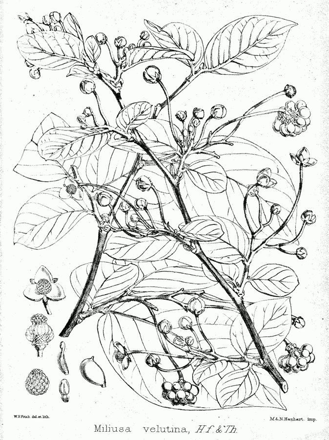

वेल्वेट्टी मिल्यूसाVelvety Miliusa
Miliusa velutina · Annonaceae · FLR-0357

- Scientific name वैज्ञानिक नाम
- Miliusa velutina (Dunal) Hook.f. & Thomson
- Family कुल
- Annonaceae
- Hindi हिंदी
- वेल्वेट्टी मिल्यूसा
- Local names स्थानीय नाम
- velvety miliusa, dom sal, kari, welweti miliusa
- Status here यहाँ की स्थिति
- native
- Movement आवागमन
- Resident, here all year
- Known from कहाँ दर्ज
- Others have published records from the wider Awadh–Purvanchal plain, none yet from Basti–Ayodhya अवध–पूर्वांचल से दूसरों के प्रकाशित अभिलेख, बस्ती–अयोध्या से अभी नहीं
- IUCN IUCN
- not evaluated
- Review समीक्षा
- not yet reviewed
When to look कब देखें
Present all year. साल भर मौजूद।
Uses and possibilities उपयोग और संभावनाएँ
“Traditional medicine” means a documented traditional use, not a claim that it works. Nothing on this page is medical advice.
Drawn from the documented uses in the profile below, where each is labelled traditional, current or a research lead. All uses →
Tell it apart from इनसे अलग पहचानें
वेल्वेट्टी मिल्यूसा / Velvety Miliusa
Miliusa velutina (Dunal) Hook.f. & Thomson — Annonaceae
वेल्वेट्टी मिल्यूसा — यह तराई और उत्तर भारत के साल वनों में उगने वाला शरीफा कुल का एक मध्यम आकार का पर्णपाती पेड़ है। इसके नए पत्ते और कोमल टहनियां मखमली रोओं से ढकी होती हैं, जिसके कारण इसे 'वेल्वेट्टी' कहा जाता है। वसंत ऋतु में इसकी डालियों पर लंबे डंठलों वाले हरे-पीले या कत्थई रंग के फूल खिलते हैं। गर्मियों में इसके छोटे काले-बैंगनी गूदेदार फल पकते हैं जिन्हें जंगली पक्षी और जानवर बड़े चाव से खाते हैं।
Quick Identification त्वरित पहचान
| Feature | Description |
|---|---|
| Habit | Medium-sized deciduous tree with thick dark grey or blackish rough bark |
| Branchlets | Densely tomentose or velvety with soft yellowish or greyish hairs |
| Leaves | Alternate, broadly ovate or elliptic-oblong, softly velvety on both sides |
| Flowers | Drooping on long slender tomentose pedicels in leaf-opposed cymes or short shoots |
| Petals | Outer petals small and sepaloid; inner petals larger, ovate, densely velvety, dull purplish |
| Fruit | Cluster of distinct ovoid or subglobose berries borne on short stalks, turning purplish-black |
Field tip: Look in sub-Himalayan sal forest tracts and undisturbed woodland margins for a tree whose leaves are softly velvety beneath and whose drooping flowers hang on remarkably long slender hairy stalks.
हिंदी: इसके पत्तों को छूने पर मखमल जैसा अहसास होता है। इसके फूल लंबी-पतली रोएंदार डंडियों से लटके रहते हैं और फल अंगूर जैसे छोटे-छोटे गुच्छों में लगते हैं।
Morphology आकारिकी
| Measurement | Range |
|---|---|
| Leaf dimensions | 3–6 by 2–4 in. (Hooker 1872) |
| Pedicel length | 2–4 in. (Hooker 1872) |
Miliusa velutina develops into a medium-sized deciduous tree with dark greyish-brown or blackish rough bark that cracks into small quadrangular plates. The young shoots, petioles, and inflorescence axes are clothed in dense, soft, velvety tomentum. The leaves are alternate, ovate or elliptic-oblong, acute or acuminate at the apex, obliquely rounded or cordate at the base, and persistently velvety-pubescent beneath.
The flowers are bisexual or polygamous, borne in few-flowered leaf-opposed cymes or on short few-leaved branchlets. The pedicels are remarkably long, slender, and tomentose. The sepals and outer petals are small and valvate. The inner petals are much larger, ovate, leathery, densely velvety outside, and greenish-yellow tinged with dull dark purple inside. The ripe carpels form a cluster of stalked, subglobose or ellipsoid berries that turn purplish-black and succulent when mature.
हिंदी: पेड़ की छाल खुरदरी और काली होती है। पत्तियों का निचला हिस्सा हमेशा रोएंदार रहता है। फूल तीन से छह की संख्या में लंबी डंडियों पर खिलते हैं। फल पकने पर रसदार और काले हो जाते हैं।
Behaviour & Ecology व्यवहार और पारिस्थितिकी
The velvety miliusa is a typical associate of the moist sal (Shorea robusta) forests and mixed riverine woodlands of northern India. It forms an intermediate canopy or understorey layer, intercepting dappled sunlight and maintaining high soil humidity beneath its leafy boughs.
The species drops its leaves at the close of winter, producing fresh velvety leaves in March accompanied by hanging flowers. The drooping floral orientation protects the internal reproductive organs from early pre-monsoon showers. Pollination is primarily accomplished by small beetles and flies attracted to the dull coloration and mild fermented scent. The fleshy black berries ripen before the monsoon, attracting avian frugivores that disperse the seeds across forest gaps.
हिंदी: यह साल के जंगलों के नीचे उगने वाला छायादार पेड़ है। वसंत में पत्ते झड़ते ही नई मखमली पत्तियां और फूल निकल आते हैं। इसके लटके हुए फूल बारिश के पानी से बचे रहते हैं और छोटे कीट इनका परागण करते हैं।
Life Cycle / Phenology जीवन चक्र
Foliage begins withering in January and falls during February. Fresh vegetative flushes emerge in March alongside flower buds, clothing the bare canopy in pale green downy growth.
Flowering peaks in April and May, with blossoms persisting for several weeks on their elongated pedicels. The syncarpous cluster of berry-like monocarps expands rapidly during May, turning from green to red and finally glossy purplish-black by June and July. Ripe fruits fall in the early monsoon rains, with prompt seedling emergence on moist humic soil.
हिंदी: फागुन में पेड़ नंगा हो जाता है और चैत में नई पत्तियों के साथ फूल खिलते हैं। जेठ-आषाढ़ में फल पककर काले हो जाते हैं और पहली बारिश के साथ जमीन पर गिरकर नए पौधे तैयार करते हैं।
Associated Species / Interactions सहजीवी प्रजातियाँ
Miliusa velutina serves as a verified larval host tree for swallowtail butterflies of the genus Graphium, including the Common Jay (Graphium doson) and the Tailed Jay (Graphium agamemnon), whose bright green caterpillars feed on fresh spring foliage.
The succulent summer berries are consumed by resident woodland birds including the Coppersmith Barbet (Psilopogon haemacephalus) and bulbuls. In natural forest associations it grows underneath Sal (Shorea robusta).
हिंदी: कॉमन जे और टेल्ड जे जैसी खूबसूरत तितलियों की सुंडियां इसकी कोमल पत्तियों को खाती हैं। बसंत और बुलबुल इसके पके फलों को खाकर जंगलों में इसके बीज फैलाते हैं।
Pests and Diseases कीट और रोग
Young foliage is frequently browsed by lepidopteran caterpillars during spring flushes, occasionally leading to localized defoliation on seedling coppices. Leaf rust caused by Aecidium species produces yellow pustules on the lower leaf surface in humid monsoon weather.
Heart rot caused by bracket fungi can enter older trees through fire scars or broken limbs in unmanaged forest tracts. Timber in contact with damp ground is quickly colonized by subterranean termites.
हिंदी: वसंत में नई पत्तियों पर तितलियों की सुंडियों का हमला होता है। बरसात के दिनों में पत्तियों पर जंग जैसी फफूंद के पीले धब्बे लग सकते हैं। सूखी लकड़ी को दीमक जल्दी खा जाती है।
Agricultural / Human Relevance कृषि प्रासंगिकता
The wood of Miliusa velutina is light yellowish-grey, moderately hard, and straight-grained. In forestry tracts it has traditionally been used for cart shafts, yokes, tool handles, spears, and domestic building frames due to its flexibility and shock resistance.
The ripe berries are edible and possess a sweet, agreeable pulp, gathered by forest-dwelling communities and herdsmen during summer foraging. Traditional medicine documents the application of bark decoctions for chronic fever and digestive sluggishness; this is a record of traditional use, not medical advice.
Traditional: Flexible wood used for bullock-cart yokes, tool shafts, and rural construction.
Today: Valued as a native biodiversity component and butterfly larval host in protected forests.
Research direction (a lead, not a result): Phytochemical evaluation of annonaceous acetogenins in bark extracts.
हिंदी: इसकी लकड़ी लचीली और मजबूत होती है, इसलिए पुराने जमाने में इससे बैलगाड़ी के जुए और कुदाल के बेंत बनाए जाते थे। इसके पके फल खाने में मीठे होते हैं। बुखार उतारने में इसकी छाल का पारंपरिक काढ़ा दिया जाता था।
Expected Locally स्थानीय रूप से अपेक्षित
Not a field record. Written from published accounts for eastern Uttar Pradesh. No confirmed local sighting yet — if you have seen it, that is what the atlas needs.
अभी तक स्थानीय पुष्टि नहीं। यह विवरण प्रकाशित स्रोतों से है, किसी अवलोकन से नहीं।
In eastern Uttar Pradesh, Miliusa velutina should be sought in the remnant sal and mixed forest blocks of the northern plain and along protected riverine woodland margins in Basti, Siddharthnagar, and Ayodhya districts. GBIF holds published records from the wider Awadh–Purvanchal plain, none yet from Basti–Ayodhya. A confirmed local record requires a dated photograph showing diagnostic floral or vegetative features submitted through the project portal.
हिंदी: बस्ती और सिद्धार्थनगर के तराई वाले साल वनों में तथा पुराने जंगलों के कोनों में इसके मिलने की संभावना है। यदि मखमली पत्तियों और लंबी डंडी वाले फूलों का यह पेड़ दिखे तो फोटो अवश्य भेजें।
Distribution वितरण
Global range: Native to South and Southeast Asia, occurring in India, Nepal, Myanmar, Thailand, Cambodia, Laos, and Vietnam.
In India: Distributed along the sub-Himalayan tract from the Yamuna eastwards through Uttarakhand, Uttar Pradesh, Bihar, and West Bengal, extending into central and peninsular India.
In Uttar Pradesh: Recorded in the Siwaliks, the Terai divisions, Rohilkhand, and the northern Oudh sal forests.
In Basti district / eastern UP: Documented in regional floras for the Upper Gangetic plain; expected in protected woodland patches across the northern border.
हिंदी: यह हिमालय की तलहटी से लेकर मध्य भारत और वियतनाम तक फैला हुआ है। उत्तर प्रदेश के तराई के वनों में यह आसानी से मिलता है।
Research Questions शोध प्रश्न
- Which butterfly species utilize Miliusa velutina as a larval host in the fragmented woodlands of the Awadh region?
- What are the specific beetle and dipteran pollinators attracted to its pendulous inner petals?
- How does the regeneration of velvety miliusa compare between intact sal canopies and disturbed forest margins? / क्या साल के घने जंगलों में इसके नए पौधे ज्यादा उगते हैं या खुली जगह पर?
- What is the seasonal nutritional value of the ripe berries for resident bird communities in early summer?
- How did rural carpenters traditionally season its timber for cart yokes to prevent warping? / पुराने बढ़ई इसकी लकड़ी को मुड़ने से बचाने के लिए कैसे पकाते थे?
हिंदी: क्या इसके फलों से निकलने वाले बीजों का अंकुरण पक्षियों के पेट से गुजरने के बाद बेहतर होता है? इस पर शोध स्थानीय स्तर पर किया जा सकता है।
Similar Species मिलती-जुलती प्रजातियाँ
| Species | How to tell apart | हिंदी | |
|---|---|---|---|
| [[custard_apple | Annona squamosa]] | Large tuberculate composite fruit (custard apple) with glaucous, less velvety leaves | शरीफा |
| [[saptaparni | Alstonia scholaris]] | Whorled leaves with milky latex, small greenish-white daytime flowers, and long paired follicles | सप्तपर्णी |
Field rule: Softly velvety leaves, very long slender pedicels, and clusters of small distinct black berries distinguish Miliusa velutina from other regional annonaceous plants.
हिंदी: शरीफे के फल बड़े और खुरदरे होते हैं, जबकि इस पेड़ के फल छोटे और अलग-अलग डंडियों पर अंगूर जैसे गुच्छों में लगते हैं।
Taxonomy & Classification वर्गीकरण
Original description. Described by Michel Félix Dunal in 1817 as Uvaria velutina in Monographie de la famille des Anonacées, p. 91. Transferred to Miliusa by J. D. Hooker and Thomas Thomson in 1855 in Flora Indica, Vol. 1, p. 151.
Subspecies. Monotypic — no subspecies are currently recognised.
Family and order placement. Placed in the family Annonaceae (subfamily Malmeoideae), order Magnoliales.
Phylogenetic notes. Miliusa is a primitive angiosperm genus within the Miliuseae tribe, distinguished by valvate petals with conspicuous inner whorls.
IUCN status rationale. Not evaluated by the IUCN Red List (not_evaluated). The species possesses extensive wild populations across the sub-Himalayan forest belt.
हिंदी: इसका पहला वैज्ञानिक विवरण 1817 में यूवेरिया के रूप में हुआ था, जिसे बाद में हूकर और थॉमसन ने मिल्यूसा वंश में स्थानांतरित किया।
Photo Gallery फोटो गैलरी
No photos yet — add field photos to media/species/velvety_miliusa/ and run node scripts/sync_photos.js.
Photos needed आवश्यक फोटो
- [ ] Habit of tree in understorey forest setting (जंगल में खड़ा पेड़)
- [ ] Pendulous flower on long slender tomentose pedicel (लंबी डंडी से लटका हुआ फूल)
- [ ] Cluster of ripe succulent purplish-black monocarps (पके हुए काले-बैंगनी फल)
- [ ] Underside of mature leaf showing soft velvety pubescence (पत्ती की मखमली निचली सतह)
References संदर्भ
- Dunal, M. F. (1817). Monographie de la famille des Anonacées, p. 91 (as Uvaria velutina).
- Hooker, J. D. & Thomson, T. (1855). Flora Indica, Vol. 1, p. 151.
- Hooker, J. D. (1872). The Flora of British India, Vol. 1. L. Reeve & Co., London.
- Duthie, J. F. (1903). Flora of the Upper Gangetic Plain, and of the Adjacent Siwalik and Sub-Himalayan Tracts, Vol. 1. Office of the Superintendent of Government Printing, Calcutta.
- Brandis, D. (1906). Indian Trees: An Account of Trees, Shrubs, Woody Climbers, Bamboos and Palms Included in the Indian Empire. Archibald Constable & Co., London.
- GBIF Occurrence Data — Miliusa velutina, India (2025).
Source file: species/flora/trees/velvety_miliusa.md